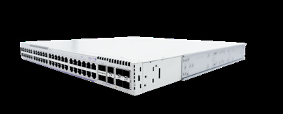

bp-os6870-datasheet

R（触发场景）
- 既有 SPB 园区要接 VxLAN-EVPN DC 或 MPLS WAN 的多 fabric 演进（一步到位不做网关转换）
- Zero Trust 部署：全口 256bit MACsec（含用户口）+ Secure Boot 应答
- Wi-Fi 6/6E/7 全 95W bt + 10G 多千兆用户口（P24M 全口 10G）
- AI 遥测/Network Advisor 联动的智能运维方案
- premium 上联模块（6x25/50G 或 2x100G）与 50G 许可行项
I（核心理念）
OS6870 基于 OmniFabric 架构："The first solution to support SPBM, VxLAN-EVPN, and MPLS within the Alcatel-Lucent OS (AOS) unified service manager framework"（ <span class="pg">原文p110</span> ）。全口 256bit MACsec + Secure Boot + AI 流遥测（Network Advisor）。层级：高端接入/园区边缘旗舰，上接 6900/9900 核心。
A1（与相邻系列选型差异）
- vs OS6860：6860N 的 VxLAN VTEP/SPB 有但 MPLS 要按节点许可、MACsec 256bit 限上联口； 6870 三 fabric 统一框架 + 全端口（含用户口）256bit MACsec + 8GB DRAM/32GB flash 平台。
- vs OS6900：6900 是固定核心（6.4Tb/s、128x10G）；6870 是接入/边缘定位，重 PoE 与 fabric 灵活性。
- V12 型独有 12x1/10/25G SFP28 全光形态，适合全光园区边缘。
A2（规格细节速查表）
机型矩阵（ <span class="pg">原文p111</span> Highlights / <span class="pg">原文p112</span> / <span class="pg">原文p113</span> 表 1-2 / <span class="pg">原文p120</span> - <span class="pg">原文p122</span> 订购）：
Advanced（advanced：2x100G VFL 固定 + 4/6x25G 固定上联）：
| 型号 | 用户口 | 上联与 VFL | PoE（1 PS/2 PS） |
|---|---|---|---|
| OS6870-24/48（/D） | 24/48 x 1G RJ45 | 4x1/10/25G SFP28 + 2x40/100G QSFP28 | N/A |
| OS6870-P24Z | 24x2.5G bt 60W | 6x1/10/25G SFP28 + 2x40/100G QSFP28 | 375/921W（BPPH） |
| OS6870-P48Z | 48x2.5G bt 60W | 同上 | 739~921/1440~1976W（BPPX，分压位） |
| OS6870-U32 | 16x1G SFP + 8x10G SFP+ + 8x25G SFP28 | 2x40/100/200G QSFP56 | N/A（BPH/BP-D） |
Premium（模块化上联槽 + 2x200G QSFP56 VFL 固定）：
| 型号 | 用户口 | 上联 | PoE（1 PS/2 PS） |
|---|---|---|---|
| OS6870-P48M | 48x2.5/5G bt 95W | LNI-U6（6x10/25/50G）或 CNI-U2（2x40/100G） | 216~762/580~1854W；BPXL 双配 3309W@230V |
| OS6870-P24M | 24x2.5/5/10G bt 95W | 同上 | 242~788/788~2280W |
| OS6870-V12（/D） | 12x1/10/25G SFP28 | 模块化 + 2x100/200G QSFP56 | N/A |
上联与堆叠：VFL 容量 advanced 200/400 Gb/s（U32 与 premium 400/800 Gb/s 聚合， <span class="pg">原文p114</span> ）；VC 8 台任意混搭，VFL 口可当上联用（ <span class="pg">原文p111</span> ）。
交换容量与包转发（ <span class="pg">原文p114</span> ）：648（24）~2000 Gb/s（V12）；482.1~1488 Mpps；8MB 包缓冲。
电源体系（ <span class="pg">原文p115</span> ）：1+1 热插拔、支持非平衡 PoE 负载分摊（不同容量 PSU 混配， <span class="pg">原文p113</span> ）；BP 250W/BP-D/BPPH 600W/BPPX 1200W/BPXL 2000W（仅 P48M/P24M）/BPH 550W（V12/U32）；advanced 最高 1976W、premium 最高 2280W（P24M 双 BPXL@230V， <span class="pg">原文p113</span> ）。
Layer 特性（ <span class="pg">原文p116</span> / <span class="pg">原文p117</span> ）：OmniFabric：SPB-M + VxLAN + VxLAN-EVPN（RFC 8365，Type 2/Type 5 路由）+ MPLS；完整 IPv4/IPv6 路由（OSPF/IS-IS/BGP/VRF/PIM）内置；1588v2 端到端透明时钟（ <span class="pg">原文p111</span> ）；全口 256bit MACsec + Clear Tag（ <span class="pg">原文p116</span> ）；Streaming telemetry/DPI（ <span class="pg">原文p111</span> ）；128K MAC、116K IPv4/58K IPv6 路由（ <span class="pg">原文p114</span> ）。
许可家族（ <span class="pg">原文p122</span> ）：OS-SW-MACSEC（免费站点许可）、OS6870-SW-PERF（LNI-U6 口 50G 速度）、SW-PRM1（P24M/P48M/V12 premium 特性）、SW-PRM2（24/48/P24Z/P48Z/U32）。
硬件平台：8GB DRAM/32GB flash；风扇 2+1/3+1 冗余；0~45°C；MTBF 350k~558k 小时；待机 71~252W（ <span class="pg">原文p119</span> ）。
规格红线：50G 需 SW-PERF；premium 上联模块不随整机发货；按 bundle（##）订购。
E（适用场景）
- SPB 老园区向多 fabric 演进一步到位（C8）：不必加网关转换 VxLAN DC/MPLS WAN
- 高安全园区/Zero Trust：全口 256bit MACsec + Secure Boot + MACsec Clear Tag
- Wi-Fi 6/6E/7 全 95W 旗舰接入：P24M（24 口全 10G 多千兆 95W）
- AI 运维：流遥测引擎 + OmniVista Network Advisor 自动识别风险（
<span class="pg">原文p111</span>） - 全光边缘：V12（12x25G SFP28）/U32（16x1G+8x10G+8x25G）
B（限制与坑）
- 50G 上联速度需 OS6870-SW-PERF 许可（"License required for 50G speed"，X16，
<span class="pg">原文p111</span>）——到货默认只到 25G - premium 上联模块（LNI-U6/CNI-U2）需单独下单，不随整机（
<span class="pg">原文p114</span>/<span class="pg">原文p122</span>） - 全系按 bundle（## 号 = 主机 + 指定电源）订购——报价时注意包内电源规格（X21，
<span class="pg">原文p120</span>-<span class="pg">原文p122</span>） - MACsec 需免费站点许可 OS-SW-MACSEC（
<span class="pg">原文p122</span>） - BPXL 2000W 仅 P48M/P24M，115VAC 输出降为 1000W（
<span class="pg">原文p115</span>） - PoE 型深 44.2cm、重量满配 9kg+——机柜深度/承重复核（
<span class="pg">原文p113</span>） - MPLS 在数据表标注为 "MPLS2"（脚注 2，streaming telemetry/DPI 亦然，
<span class="pg">原文p111</span>）——投标前按 AOS 规格指南确认当前版本交付状态
来源：bp-omniswitch-datasheets DOC 12（p110-124，MPR24040101EN June 2026）；verified.md C8/C9/X16/X21/P13/P14/F5